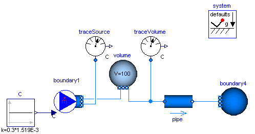
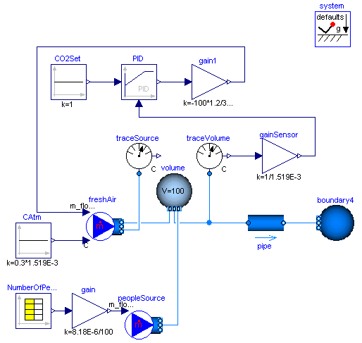

| Name | Description |
|---|---|
| Demonstrates a room volume with CO2 accumulation | |
| Demonstrates a room volume with CO2 controls |
 Modelica_Fluid.Examples.TraceSubstances.RoomCO2
Modelica_Fluid.Examples.TraceSubstances.RoomCO2
This example consists of a volume with a carbon dioxide concentration that corresponds to about 1000 PPM. There is a fresh air stream with a carbon dioxide concentration of about 300 PPM. The fresh air stream is such that the air exchange rate is about 5 air changes per hour. After 1 hour of ventilation, the volume's carbon dioxide concentration is close to the concentration of the fresh air.

Extends from Modelica.Icons.Example (Icon for an example model).
Modelica_Fluid.Examples.TraceSubstances.RoomCO2WithControls
This example illustrates a room volume with a CO2 source and a fresh air supply with feedback control. The CO2 emission rate is proportional to the room occupancy, which is defined by a schedule. The fresh air flow rate is controlled such that the room CO2 concentration does not exceed 1000 PPM (=1.519E-3 kg/kg). The fresh air has a CO2 concentration of 300 PPM which corresponds to a typical CO2 concentration in the outside air.
The CO2 emission from the occupants is implemented as a mass flow source. Depending on the activity and size, a person emits about 8.18E-6 kg/s CO2. In the model, this value is multiplied by the number of occupants. Since the mass flow rate associate with the CO2 source model contributes to the volume's energy balance, this mass flow rate should be kept small. Thus, in the source model, we set the CO2 concentration to C={100} kg/kg, and scaled the mass flow rate using
m_flow = 1/100 * nPeo * 8.18E-6 kg/(s*person)
where nPeo is the number of people in the room. This results in a mass flow rate that is about 5 orders of magnitudes smaller than the supply air flow rate, and hence its contribution to the volume's energy balance is negligible.

Extends from Modelica.Icons.Example (Icon for an example model). HTML-documentation generated by Dymola Wed Feb 04 15:31:24 2009.